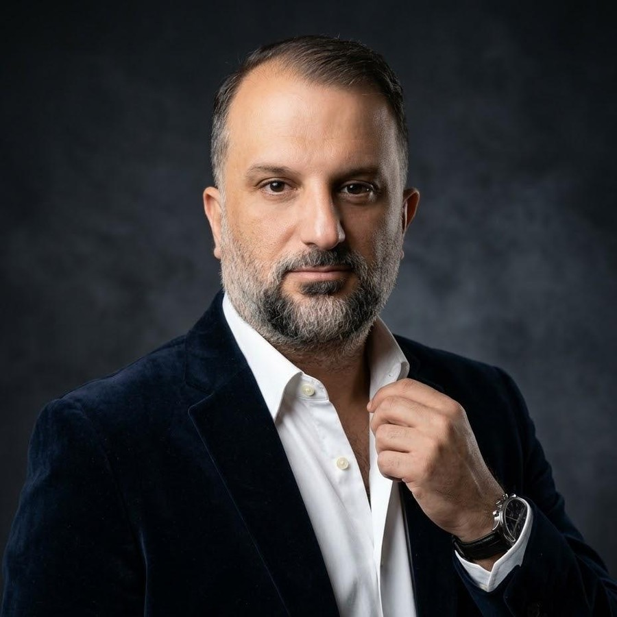
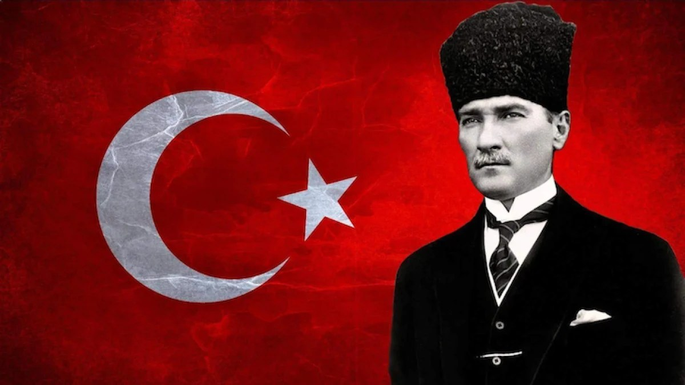

3D sahne yükleniyor…
☰

ÜSTAD KENAN KUZUCU
Sanat · Bilgi · Zarafet
Araştırmacı · Yazar · Şair · Saç Tasarım Uzmanı · Bilgisayar Teknisyeni · Siber Güvenlik Araştırmacısı · Web Tasarımcısı · Yapay Zekâ Araştırmacısı
Tema
Siyah Altın
🔤 Yazı Tipi
🌌 3D: AÇIK
🔗 Bağlantı

“Egemenlik kayıtsız şartsız milletindir.”
Gazi Mustafa Kemal Atatürk — Ne mutlu Türk’üm diyene!
↑